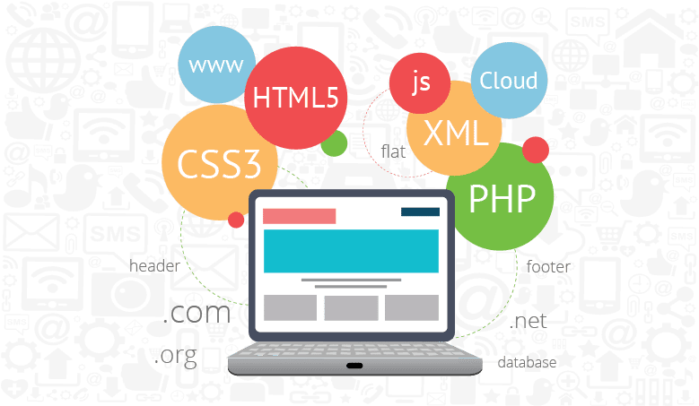

I am Fatima
and i am a student of Software Engineering

EXPERIENCE

WEB DEVALOPMENT STUDENT
As a web development student, I'm currently immersed in the world of coding languages, design principles, and cutting-edge technologies.

PYTHON DEVALOPER
As a Python developer, I specialize in leveraging the language's versatility and simplicity to build robust and scalable solutions.
From crafting elegant algorithms to developing complex web applications

MERN STACK DEVALOPER
As a MERN stack developer, I excel in utilizing MongoDB, Express.js, React, and Node.js to create dynamic and feature-rich web applications.
With expertise in both frontend and backend technologies

WORDPRESS DEVALOPER
As a WordPress developer,
I specialize in harnessing the power of the world's most popular content management system to create stunning websites and customized solutions.